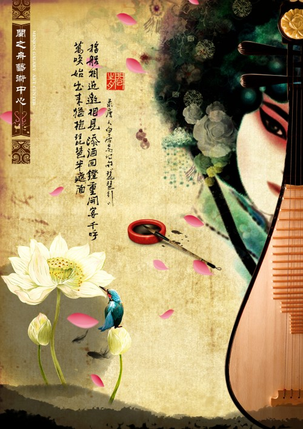

扮演剧中人物分角色行当，是中国戏曲特有的表演体制。行当从内容上说，它是戏曲人物艺术化、规范化的形象类型。从形式上看，又是有着性格色彩的表演程式的分类系统。这种表演体制是戏曲的程式性在人物形象创造上的集中反映。每个行当，都是一个形象系统，同时也是一个相应的表演程式系统。举例来说，老生就是一个形象系统，其中包容着一系列中年以上的、正直刚毅的男性人物形象。如京剧《空城计》中充满智慧的军事家诸葛亮，京剧《四进士》里的宋士杰等。这些人物的性格气质比较接近，在表演上也有一整套相应的程式。如念韵白、用真声演唱；风格刚劲、质朴、淳厚；动作造型以雍容、端方、庄重为基调。由于这类人物必须戴象征着胡须的髯口，因此又有一套髯口上的功夫。某些剧种还为戴纱帽的人物创造了一套耍帽翅的特技。再如净行，又是另一类形象，包拯、项羽、曹操等都属于这个系统。这是戏曲舞台上具有独特风格的性格造型。它有两个突出的表现：一是面部化妆要用各种色彩和图案勾勒脸谱，所以，净又俗称花脸；二是在性格气质上都近乎粗犷、奇伟或豪迈，因而在表演上要求音色宽阔洪亮，动作造型也是粗线条的。由此可见，行当既有性格的内涵，又含有相应程式化的表现方式，是形象类型和程式的统一体。[17]
由于戏曲人物思想情感的内在特征必须加以外化，并从程式上对其进行提炼和规范，这就会使唱念做打各类程式无不带有某种性格的色彩。经过长期的艺术磨炼，一些性格相近的艺术形象以及与之相应的表演程式、表演手法和技巧便逐渐积累、汇集且相对地稳定，这就是行当的形成。而当一个行当形成以后，它所积累的表演程式又可作为创造新的形象的手段。如此循环往复，不断创造、不断发展，促使了行当体制的逐步丰富和完善。可以说，行当这种表演体制，是戏曲表演程式创造形象的结果，又是形象再创造的出发点。[17] 生、旦、净、丑各个行当都有各自的形象内涵和一套不同的程式和规制；每个都行当具有鲜明的造型表现力和形式美。
宋代的“杂剧”，金代的“院本”和讲唱形式的“诸宫调”，从乐曲、结构到内容，都为元代杂剧打下了基础。[2] 元代（成熟期） 到了元代，“杂剧”就在原有基础上大大发展，成为一种新型的戏剧。它具备了戏剧的基本特点，标志着中国戏剧进入成熟的阶段。[2] 12世纪中期到13世纪初，逐渐产生了职业艺术和商业性的演出团体及反映市民生活和观点的元杂剧和金院本，如关汉卿创作的《窦娥冤》、马致远的《汉宫秋》
联系方式：
地址：河南省南阳市卧龙区孔明北路666号河南公院
联系人：薛昭辉
联系电话：110—120—130
电子邮箱：408796248@qq.cn
山河拱手，为君一笑，欢迎您的欣赏，记得给个好评啊！！！